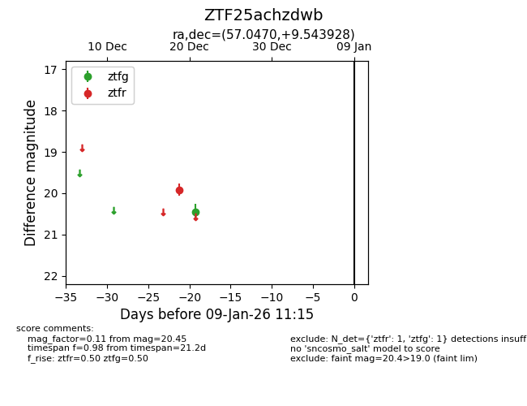
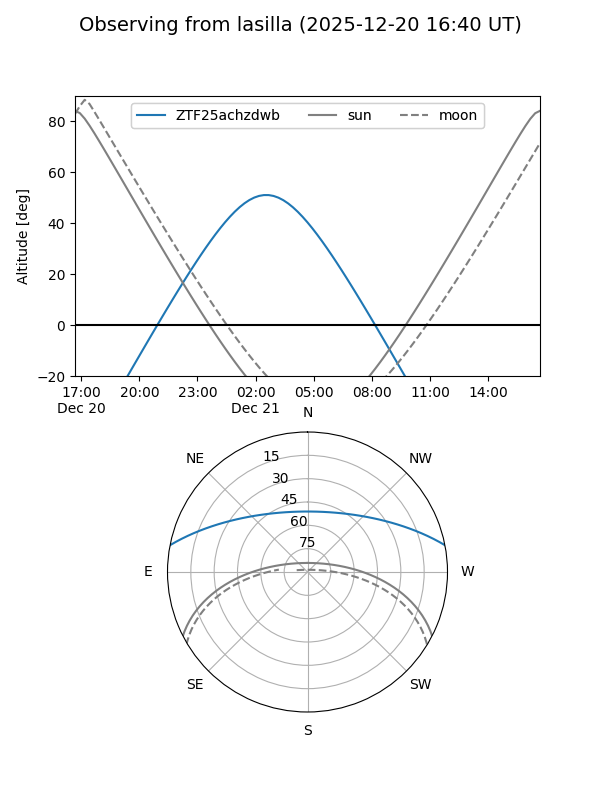
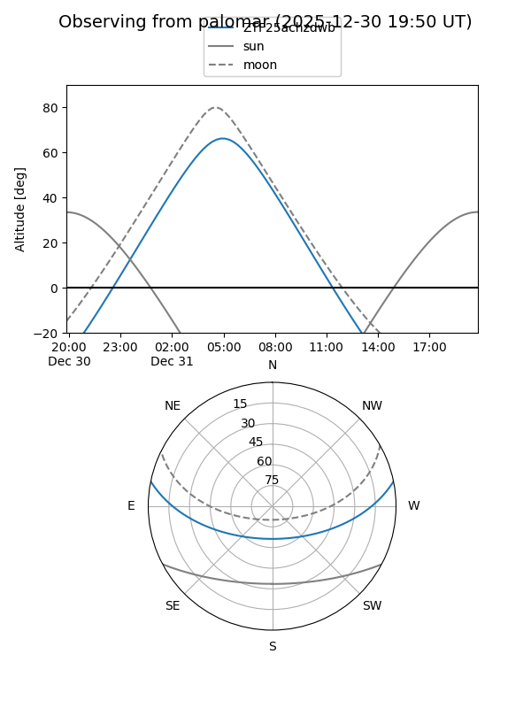

ZTF25achzdwb
Target ZTF25achzdwb at 2026-01-09 12:49
Aliases and brokers:
FINK: link
Lasair: link
ALeRCE: link
alt names
ZTF25achzdwb (ztf,fink_ztf)
Coordinates:
equatorial (ra, dec) = 57.0470,+9.54393
equatorial (HMS+DMS) = 03:48:11.28,+09:32:38.14
galactic (l, b) = (178.5682,-33.62397)
Flags:
Photometry:
last ztfg=20.45, ztfr=19.91
1 ztfg, 1 ztfr detections
Lightcurve

Visibility


Additional plots